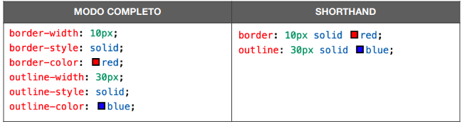
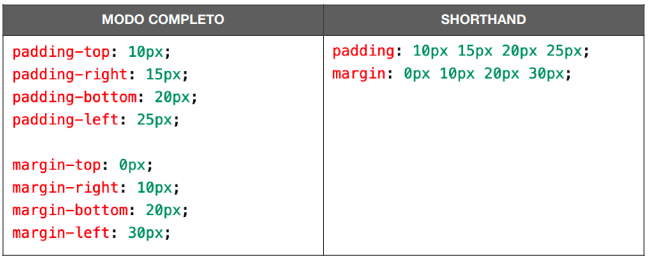
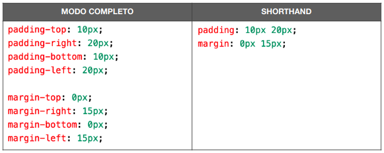

Para definir um tamanho ou uma distância, devemos utilizar as unidades da linguagem CSS. Podemos classificar essas unidades em absolutas e relativas.

Leia o PDF!!! Height: Altura de caixa onde encontra-se o texto, Ela se ajusta automaticamente de acordo com o tamanho da fonte. Mas tem como ajusta manualmente.
Width: Largura das mesmas propriedade do Heigth. O tamanho da caixa não inclui as medidas de padding, border, outline e margin que veremos a seguir
Padding: esse fica entre o borda e o box (Área ocupada pelo texto). Dando uma certa margem interna para que o texto não fique colado na borda. O padding só ocupa espaço virtual mas não visual.
Border: é a borda essa ocupa espaço virtual e pode ter uma espessura, uma cor e um formato.
Outline: fica entre a margem e a borda, podemos determinar o contorno (outline) que é muito pouco utilizado, mas existe. Ele é apenas visual e não ocupa espaço virtual e pode ultrapassar a margem. Sendo assim ele pode tampar textos em volta.
Margin: a margem ocupa espaço virtual e pode possuir efeito visual. É ideal para que objetos não fiquem colados na tela dificultando a interatividade. Exemplo de código no head:
<style>
div>h1
{
text-align: center;
width: 200px;
height: 200px;
background-color: #d62727;
border-width: 20px;
border-style: solid;
border-color: #468d46;
padding: 50px;
outline-width: 30px;
outline-style: solid;
outline-color: #a1418dbe;
margin: 15px;
}
<style>
<div>
<h1>Título para teste de margens</h1>
</div>
Título para teste de margens
- Vermelho: É o box própriamente dito. Porém o espaço que há ente o texto e a parte verde é o Padding
- Verde: É a borda.
- Rosa: É o outline. Note que ele cobriu o texto envolta dele. Isso aconteceu porque ele não ocupa um espaço virtual apenas visual. Para evitar isso basta aumentar o tamanho de margem
Por isso é imortante que a Margem seja sempre maior que o OutLine e que o Padding seja usado apenas como um pequeno espaçamento entre o box (texto) e a margem.
Ferramenta de desenvolvedor
Uma boa forma de visualizar a organização dos boxes e testar a melhores formatos utilizando o Dev Tools do chrome cast.
Para isso basta abrir o site que deseja → botão direto em qualquer lugar da página→ inpesionar.
Para melhor vizualizar clique nos 3 pontinhos no lado direito superior→dock side→UnDock
Agora vai em Style → proucura o box que deseja fazer os teste em "Element" → Agora em style estará aberto todas as configurações da box.
Para fazer os testes é só selecionar a configuração que deseja testar e modificar os valores. É possível mudar os valores rolando o scroll do mouse.
OBS.: Essa modificação não altera o arquivo original!
Shothand
As configurações de borda e contorno também possuem shorthands para simplificar o código anterior. A ordem para as duas configurações é sempre a mesma para as duas shorthands: largura (-width), estilo (-style) e cor (-color)
Todo elemento de caixa possui quatro valores para padding e quatro para margin, sempre nessa mesma ordem: superior (-top), direita (-right), inferior (-bottom), esquerda (-left). Quando colocamos um único valor de dimensão para o preenchimento ou margem, esse mesmo valor é aplicado simetricamente a todas as direções, mas também podemos fazer códigos como:
Também existe a opção de indicar cada shorthand das propriedades de preenchimento e borda usando apenas duas medidas:

Outro recurso que também será muito usado em nossos exercícios é o de por margens no automático. Isso é, a centralização de blocos. Para que isso seja feito, devemos pedir que o navegador calcule automaticamente as margens da esquerda e da direita para que o bloco seja colocado no meio do navegador, independente do tamanho da janela.
Para centralizar uma caixa, use a seguinte declaração:
margin: auto;
Sombras
Existem 02 efeitos de sombra externa e interna, mas a interna é pouco usada:
Sombra externa:
Exemplo de código no body:
<h1 style="box-shadow: 5px 5px 4px 4px rgba(0, 0, 0, 0.693);">Sombras
</h1>
O 1º px: Se refere ao deslocamento lateral,onde valores positivos a sombra se deslocará para direita e valores negativos a sombra se descará para esquerda
O 2º px: Se refere ao deslocamento vertical ,onde valores positivos a sombra se deslocará para abaixo e valores negativos a sombra se deslocará para acima
O 3º px: Se refere ao tamanho da dissipação da sombra, essa é a parte do contorno esfumaçado da sombra
O 4º px: Se refere ao tamanho da parte central da sombra. Essa é a parte mais opaca.
Por ultimo é a cor da sombra onde é mais comum usar a cor preta com trasparência sempre um pouco maior que 50%
Exemplo de funcionamento: É o próprio TituloCaixas com Vertices Arredondados
Podemos arredondar os vértices usando uma declaração simples usando a propriedade border-radius. Adicione o seguinte comando ao seletor do artigo do exemplo que estamos criando:
Exemplo de Arredondamento 01Na declaração acima, todos os vértices foram levemente arredondados (10px) de forma simétrica. Se for necessário, podemos indicar quatro medidas diferentes, uma para cada vértice. Olhe atentamente para o resultado abaixo e perceba que cada ponta está diferente.
Exemplo de Arredondamento 01Assim como fizemos com as margens, também é possível indicar apenas dois valores, o que vai agir em vértices intercalados, partindo do canto superior esquerdo..
Exemplo de Arredondamento 01Bordas Decoradas
É um recurso pouco utilizado. Então se precisar assita o vídeo: Bordas decoradas
Programador br
Unidade de medidas
Unidade de medidas relativas
| Unidade | Descrição |
|---|---|
| em | 1 em é igual uma vez o tamanho da fonte do conteiner pai dessa box. Caso não tenha sido alterada o tamanho de fonte padrão equivalerá a 16px. |
| rem | rem é similar ao em porém invés de ser relativa ao conteriner será relativa a tamanho de fonte do html, que caso não tenha sido alterada equivalerá a 16px. |
| ch | Geralmente, 1 ch é igual a largura do dígito “0” da fonte atual. |
| ex | Geralmente, 1 ex é igual a altura da letra “x” da fonte atual. |
| vw | 1 vw é igual a 1% da largura da área de visualização do navegador (viewport). É possível colocar essa medida relativa na altura então cuidado |
| vh | 1 vh é igual a 1% da altura da área de visualização do navegador (viewport). É possível colocar essa medida relativa na largura então cuidado |
| vmin | 1 vmim é igual ao valor mínimo entre vw e vh |
| vmax | 1 vmax é igual ao valor máximo entre vw e vh. |